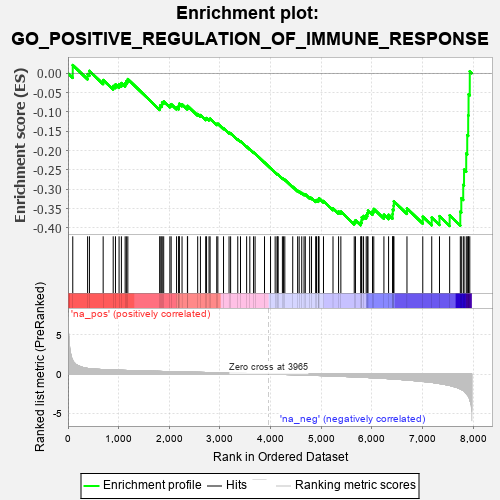
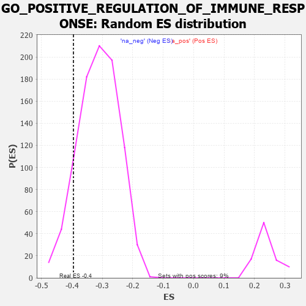

| | | Dataset | 7d |
| Phenotype | NoPhenotypeAvailable |
| Upregulated in class | na_neg |
| GeneSet | GO_POSITIVE_REGULATION_OF_IMMUNE_RESPONSE |
| Enrichment Score (ES) | -0.39504626 |
| Normalized Enrichment Score (NES) | -1.2630341 |
| Nominal p-value | 0.10694598 |
| FDR q-value | 0.52557206 |
| FWER p-Value | 1.0 |
Table: GSEA Results Summary

Fig 1: Enrichment plot: GO_POSITIVE_REGULATION_OF_IMMUNE_RESPONSE
Profile of the Running ES Score & Positions of GeneSet Members on the Rank Ordered List
| PROBE | GENE SYMBOL | GENE_TITLE | RANK IN GENE LIST | RANK METRIC SCORE | RUNNING ES | CORE ENRICHMENT | | 1 | UBE2K | | | 94 | 1.739 | 0.0212 | No |
| 2 | BAX | | | 387 | 0.711 | -0.0023 | No |
| 3 | MLH1 | | | 423 | 0.679 | 0.0061 | No |
| 4 | XRCC6 | | | 694 | 0.560 | -0.0175 | No |
| 5 | HMGB2 | | | 892 | 0.507 | -0.0328 | No |
| 6 | MATR3 | | | 937 | 0.498 | -0.0289 | No |
| 7 | HMGB4 | | | 1008 | 0.482 | -0.0286 | No |
| 8 | MEF2C | | | 1054 | 0.473 | -0.0253 | No |
| 9 | SRC | | | 1128 | 0.459 | -0.0259 | No |
| 10 | PSMD7 | | | 1152 | 0.454 | -0.0202 | No |
| 11 | PSMD2 | | | 1181 | 0.450 | -0.0151 | No |
| 12 | PSMD4 | | | 1811 | 0.335 | -0.0886 | No |
| 13 | MSH2 | | | 1819 | 0.334 | -0.0832 | No |
| 14 | TRIM5 | | | 1852 | 0.327 | -0.0810 | No |
| 15 | PSMD6 | | | 1858 | 0.326 | -0.0754 | No |
| 16 | PAK3 | | | 1889 | 0.322 | -0.0731 | No |
| 17 | RAF1 | | | 2011 | 0.303 | -0.0827 | No |
| 18 | HMCES | | | 2036 | 0.300 | -0.0800 | No |
| 19 | PSME4 | | | 2143 | 0.285 | -0.0881 | No |
| 20 | SYK | | | 2186 | 0.278 | -0.0881 | No |
| 21 | C1QBP | | | 2189 | 0.278 | -0.0831 | No |
| 22 | ATAD5 | | | 2197 | 0.277 | -0.0787 | No |
| 23 | PSMF1 | | | 2251 | 0.268 | -0.0803 | No |
| 24 | MIF | | | 2357 | 0.252 | -0.0888 | No |
| 25 | SIN3A | | | 2361 | 0.251 | -0.0844 | No |
| 26 | PSMD5 | | | 2560 | 0.218 | -0.1054 | No |
| 27 | VAV3 | | | 2614 | 0.210 | -0.1081 | No |
| 28 | DDX1 | | | 2718 | 0.196 | -0.1175 | No |
| 29 | CUL1 | | | 2735 | 0.193 | -0.1158 | No |
| 30 | NSD2 | | | 2784 | 0.185 | -0.1184 | No |
| 31 | BRK1 | | | 2805 | 0.183 | -0.1175 | No |
| 32 | CPN2 | | | 2936 | 0.160 | -0.1309 | No |
| 33 | BTK | | | 2958 | 0.156 | -0.1306 | No |
| 34 | PROS1 | | | 3070 | 0.141 | -0.1420 | No |
| 35 | PSMD9 | | | 3179 | 0.125 | -0.1534 | No |
| 36 | AP1G1 | | | 3210 | 0.121 | -0.1549 | No |
| 37 | TAB1 | | | 3351 | 0.097 | -0.1708 | No |
| 38 | MED1 | | | 3405 | 0.089 | -0.1759 | No |
| 39 | PQBP1 | | | 3526 | 0.072 | -0.1897 | No |
| 40 | MAPK3 | | | 3589 | 0.062 | -0.1964 | No |
| 41 | SKP1 | | | 3663 | 0.049 | -0.2048 | No |
| 42 | DHX9 | | | 3693 | 0.044 | -0.2076 | No |
| 43 | DGKZ | | | 3879 | 0.015 | -0.2308 | No |
| 44 | DDX58 | | | 3998 | -0.007 | -0.2457 | No |
| 45 | PDE4B | | | 4089 | -0.022 | -0.2567 | No |
| 46 | ABL1 | | | 4125 | -0.027 | -0.2606 | No |
| 47 | CRK | | | 4139 | -0.031 | -0.2617 | No |
| 48 | STX7 | | | 4147 | -0.033 | -0.2620 | No |
| 49 | ARPC2 | | | 4232 | -0.047 | -0.2717 | No |
| 50 | PAX5 | | | 4255 | -0.051 | -0.2736 | No |
| 51 | PSME3 | | | 4280 | -0.056 | -0.2755 | No |
| 52 | SPG21 | | | 4436 | -0.083 | -0.2936 | No |
| 53 | PLPP4 | | | 4533 | -0.101 | -0.3039 | No |
| 54 | BAG6 | | | 4563 | -0.108 | -0.3055 | No |
| 55 | GATA3 | | | 4614 | -0.120 | -0.3096 | No |
| 56 | ARPC3 | | | 4659 | -0.129 | -0.3127 | No |
| 57 | LIMK1 | | | 4684 | -0.136 | -0.3132 | No |
| 58 | PLCG1 | | | 4770 | -0.151 | -0.3211 | No |
| 59 | PLCL2 | | | 4807 | -0.159 | -0.3226 | No |
| 60 | CLU | | | 4889 | -0.174 | -0.3296 | No |
| 61 | VAMP8 | | | 4905 | -0.179 | -0.3281 | No |
| 62 | EP300 | | | 4941 | -0.186 | -0.3290 | No |
| 63 | XRCC5 | | | 4946 | -0.187 | -0.3260 | No |
| 64 | PRKDC | | | 4955 | -0.189 | -0.3234 | No |
| 65 | PDPK1 | | | 5043 | -0.207 | -0.3305 | No |
| 66 | DDX21 | | | 5231 | -0.252 | -0.3494 | No |
| 67 | ELMO2 | | | 5341 | -0.283 | -0.3579 | No |
| 68 | FZD5 | | | 5386 | -0.292 | -0.3579 | No |
| 69 | WNK1 | | | 5650 | -0.362 | -0.3844 | No |
| 70 | PSMD1 | | | 5674 | -0.367 | -0.3803 | No |
| 71 | VAMP7 | | | 5777 | -0.399 | -0.3857 | Yes |
| 72 | LAMP1 | | | 5796 | -0.404 | -0.3803 | Yes |
| 73 | ADA | | | 5798 | -0.405 | -0.3727 | Yes |
| 74 | SNX4 | | | 5834 | -0.415 | -0.3692 | Yes |
| 75 | ARPC4 | | | 5886 | -0.430 | -0.3675 | Yes |
| 76 | DOCK1 | | | 5908 | -0.438 | -0.3618 | Yes |
| 77 | STK11 | | | 5922 | -0.443 | -0.3550 | Yes |
| 78 | XBP1 | | | 6011 | -0.475 | -0.3572 | Yes |
| 79 | RAC1 | | | 6036 | -0.484 | -0.3510 | Yes |
| 80 | CDC42 | | | 6236 | -0.548 | -0.3658 | Yes |
| 81 | ELF1 | | | 6328 | -0.587 | -0.3662 | Yes |
| 82 | UBE2N | | | 6407 | -0.621 | -0.3643 | Yes |
| 83 | MBL2 | | | 6411 | -0.623 | -0.3528 | Yes |
| 84 | CSK | | | 6428 | -0.630 | -0.3428 | Yes |
| 85 | MALT1 | | | 6432 | -0.634 | -0.3311 | Yes |
| 86 | PAK1 | | | 6691 | -0.757 | -0.3494 | Yes |
| 87 | CCR2 | | | 7003 | -0.939 | -0.3711 | Yes |
| 88 | PTPRJ | | | 7180 | -1.054 | -0.3733 | Yes |
| 89 | CYLD | | | 7333 | -1.206 | -0.3696 | Yes |
| 90 | CD22 | | | 7534 | -1.449 | -0.3674 | Yes |
| 91 | RNF31 | | | 7744 | -1.895 | -0.3579 | Yes |
| 92 | PDE4D | | | 7764 | -1.944 | -0.3233 | Yes |
| 93 | MUC2 | | | 7802 | -2.066 | -0.2886 | Yes |
| 94 | TRAF6 | | | 7818 | -2.157 | -0.2494 | Yes |
| 95 | TRAF2 | | | 7861 | -2.481 | -0.2074 | Yes |
| 96 | FYN | | | 7881 | -2.622 | -0.1599 | Yes |
| 97 | MUC19 | | | 7900 | -2.797 | -0.1089 | Yes |
| 98 | PSMD3 | | | 7907 | -2.887 | -0.0546 | Yes |
| 99 | PSMD8 | | | 7931 | -3.286 | 0.0051 | Yes |
Table: GSEA details [plain text format]

Fig 2: GO_POSITIVE_REGULATION_OF_IMMUNE_RESPONSE: Random ES distribution
Gene set null distribution of ES for GO_POSITIVE_REGULATION_OF_IMMUNE_RESPONSE